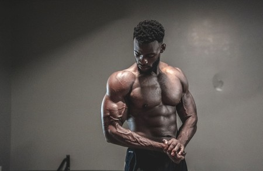

Welcome to Ejercicios efectivos para los hombros
Top 5 Mejores Ejercicios Para Hombros con Mancuernas + Rutina para Deltoides - YouTube
2021.06.26 20:07Información Prensa Derechos de autor Contactar Creadores Publicidad Desarrolladores Términos Privacidad Política y seguridad Cómo funciona YouTube Probar funciones nuevas © 2021 Google LLC
